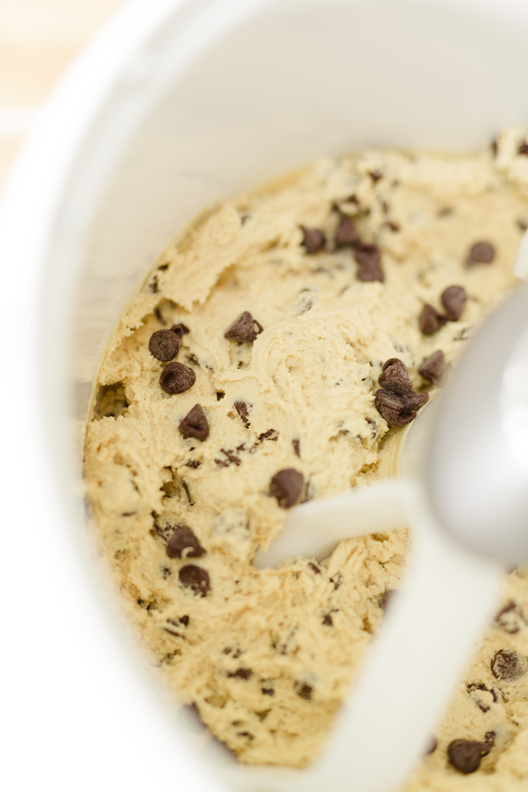

Recipe Information
- Preparation time: 15 minutes
- Cooking time: 12 minutes
- Servings: 24 cookies
- Difficulty: Beginner
Ingredients

- 1 cup (2 sticks) unsalted butter, softened
- 3/4 cup granulated sugar
- 3/4 cup packed light-brown sugar
- 1 large egg
- 1 teaspoon vanilla extract
- 2 1/4 cups all-purpose flour
- 1 teaspoon baking soda
- 1/2 teaspoon salt
- 2 cups semisweet chocolate chips
Nutrition Facts
Based on 1 cookie serving.
| Nutrient |
Amount |
| Calories |
150 kcal |
| Total Fat |
8g |
| Carbohydrates |
19g |
| Protein |
1g |
Instructions
- Preheat your oven to 375°F ($190^\circ C$). Line a baking sheet with parchment paper.
- In a medium bowl, whisk together the flour, baking soda, and salt. Set aside.
- In a large bowl, using a hand mixer or stand mixer, cream together the softened butter, granulated sugar, and brown sugar until light and fluffy.
- Beat in the egg and vanilla extract until well combined.
- Gradually add the dry ingredients to the wet ingredients, mixing on low speed until just combined. Do not overmix.
- Stir in the chocolate chips by hand using a spatula.
- Drop rounded tablespoons of dough onto the prepared baking sheet, about 2 inches apart.
- Bake for 10 to 12 minutes, or until the edges are golden brown. The centers may still look slightly soft.
- Allow the cookies to cool on the baking sheet for 2 minutes before transferring them to a wire rack to cool completely.
Tips and Notes
For chewier cookies, slightly underbake them. For a crispier cookie, bake for an extra 1-2 minutes. You can also substitute walnuts or pecans for a portion of the chocolate chips.
Recipe Source: Classic Allrecipes Cookie